Рыбокомбинат (Самаровский рыбоконсервный комбинат)
За годы Великой Отечественной войны коллективом комбината добыто 1720 тонн рыбы, выработано 28 млн 816 тыс. банок консервов...

Ханты-Мансийск
Город трудовой доблести
За годы Великой Отечественной войны коллективом комбината добыто 1720 тонн рыбы, выработано 28 млн 816 тыс. банок консервов...

В годы войны Обской Север стал единым трудовым фронтом. Кондинский и Ханты-Мансийский леспромхозы переключились на выпуск продукции оборонного значения...

В парке Победы в мае 2010 года был установлен танк-памятник как символ самой кровопролитной войны...

Аллея Славы города Ханты-Мансийска в Парке Победы появилась 9 мая 1980 года...
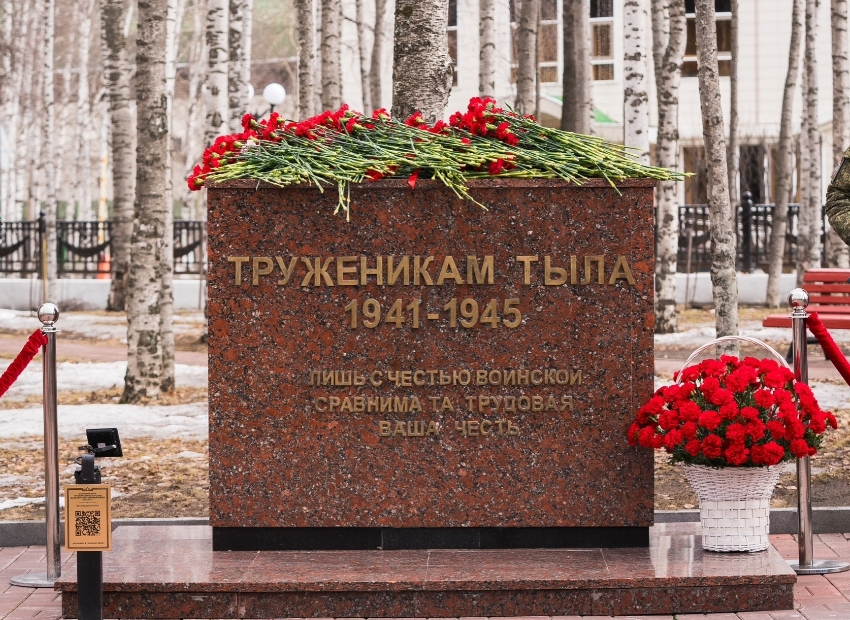
Монумент в честь жителей города, ковавших победу в тылу. Открыт в 2020 году в сквере Трудовой славы.

Установлена в 2023 году в честь присвоения Ханты-Мансийску почётного звания.
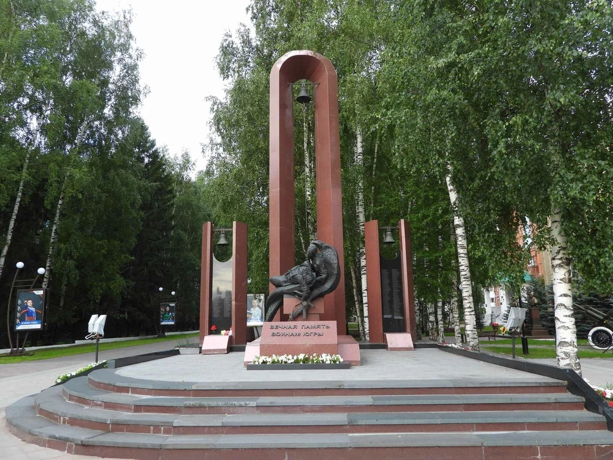
Скульптуру весом в тонну и высотой 3 метра отлили в Екатеринбурге. Три арки с колоколами венчают скульптуру...

Монумент – дань уважения жителям города, которые внесли вклад в Великую Победу...
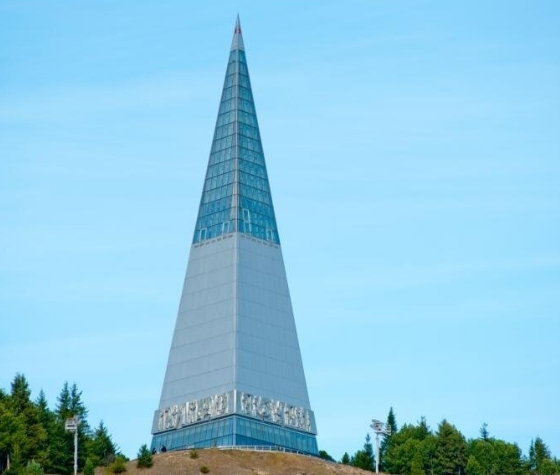
Стела «Первооткрывателям земли Югорской» - это уникальный объект города Ханты-Мансийска...
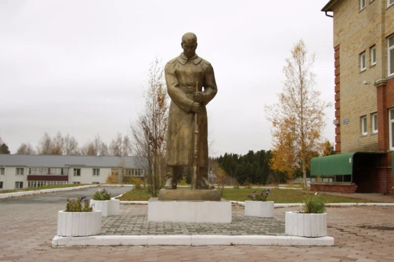
Скульптура солдата-освободителя, символ мужества защитников Отечества.
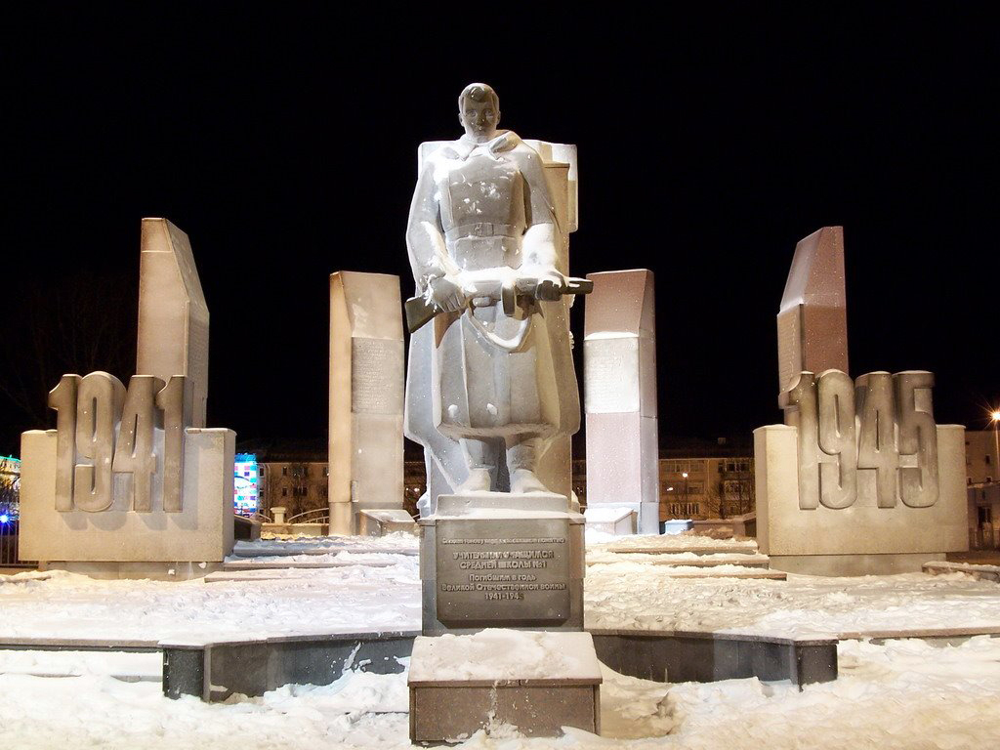
Памятник расположен по адресу: Комсомольская, 40. Посвящён учителям и учащимся школы №1, погибшим в годы Великой Отечественной войны. Открыт в 1971 году, после переноса и реконструкции вновь открыт в 2006 году.
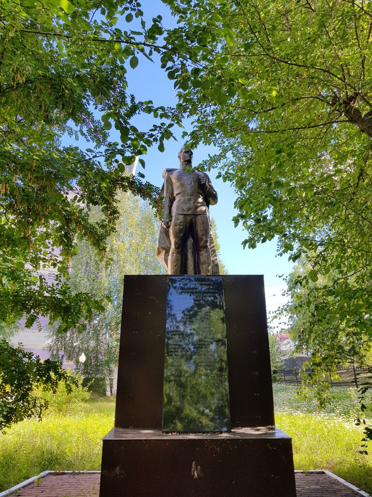
Памятник открыт в 1975 году на территории педагогического училища. Посвящён студентам и преподавателям, погибшим в годы Великой Отечественной войны.
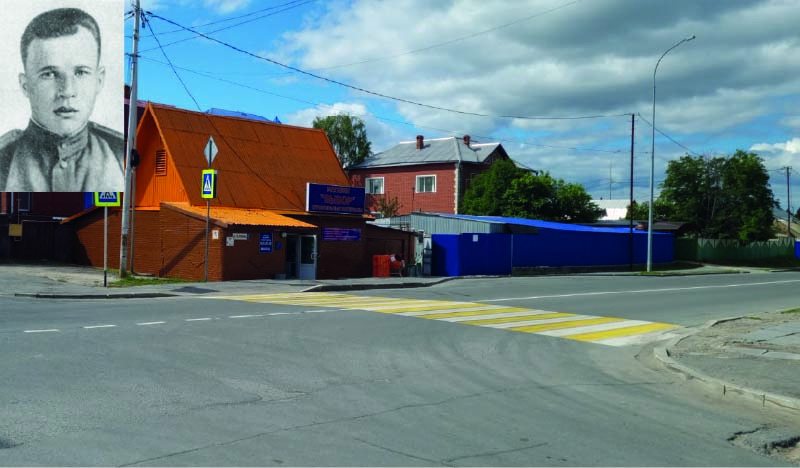
Год переименования: точно не установлен. Улица названа в честь Героя Советского Союза Ивана Захаровича Безноскова, ранее была известна как Логовая.
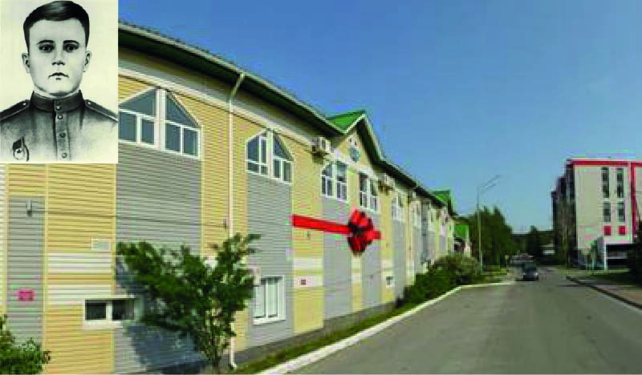
Год переименования: не установлен. Улица названа в честь Героя Советского Союза Николая Ивановича Сирина, память о котором сохраняется и в мемориальной доске на доме №43.
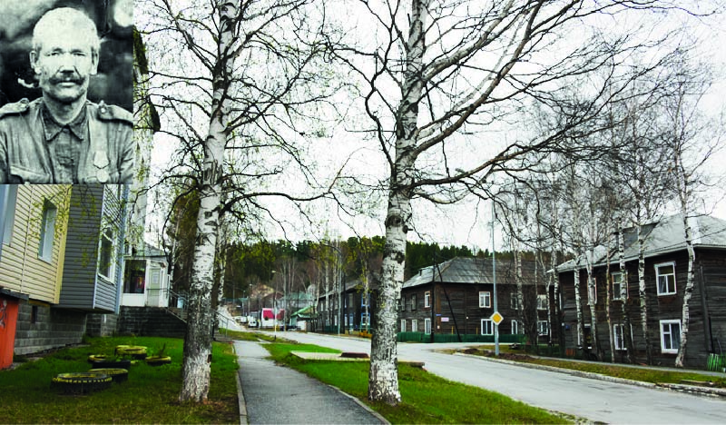
Год переименования: не установлен. Улица названа в честь Героя Советского Союза Гавриила Епифановича Собянина.
1934 — открытие фельдшерско-акушерской школы; 1946 — переименование в медицинское училище; 1994 — создание окружного медицинского колледжа; 2006 — вхождение в состав медицинской академии.

05.04.1921 – 14.02.1988

10.04.1921-14.01.1945

21.02.1922- 15.08.1993

20.01.1918 – 25.02.1945

5.10.1919 - 1.01.1984

06.09.1912-16.02.2002
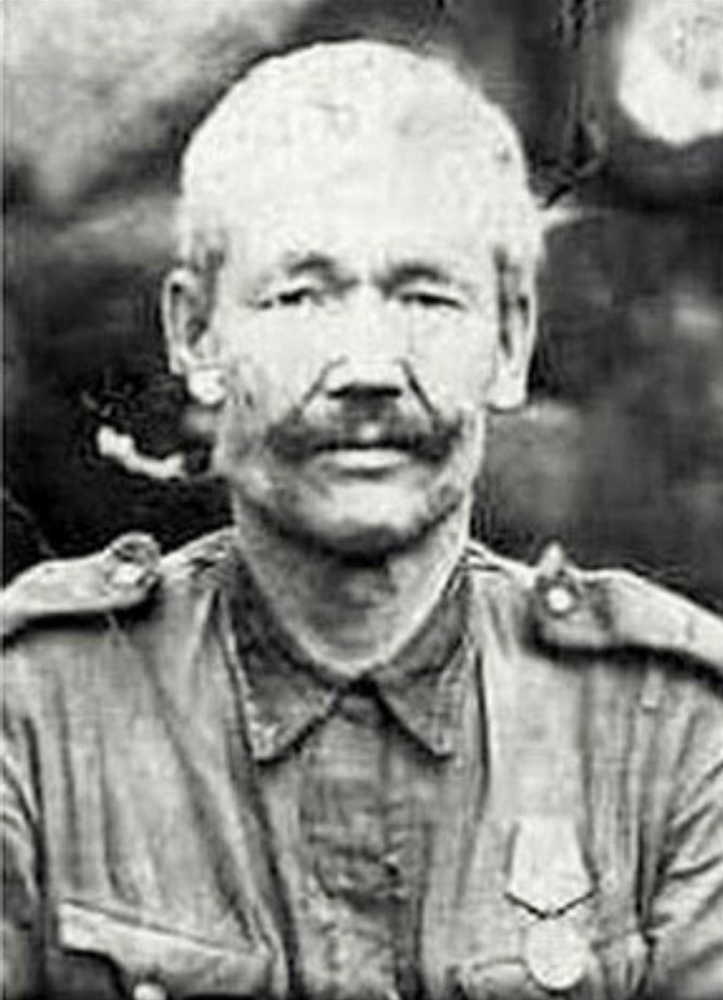
25.05.1896 — 23.12.1944
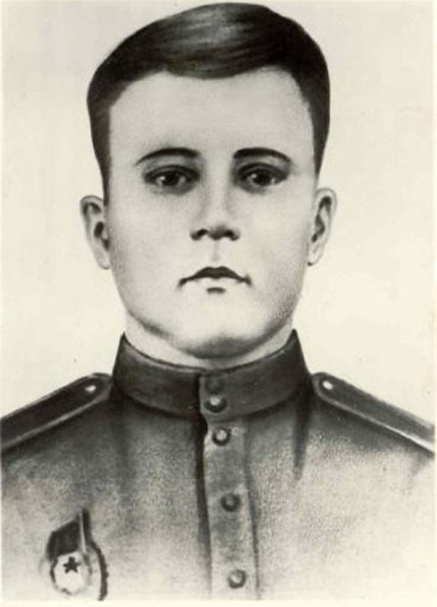
09.05.1922 — 15.01.1943


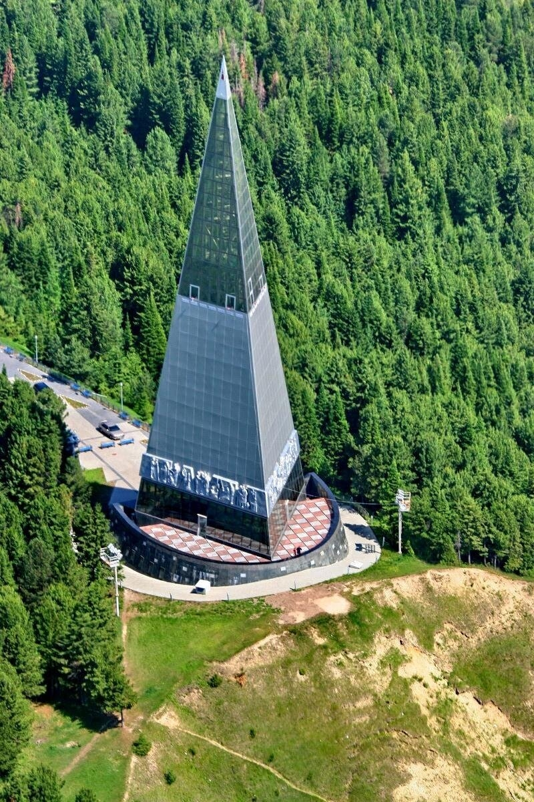
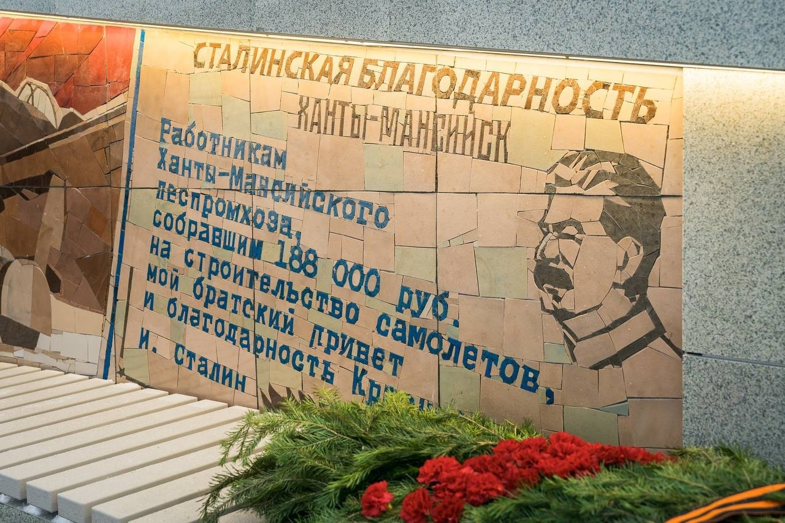
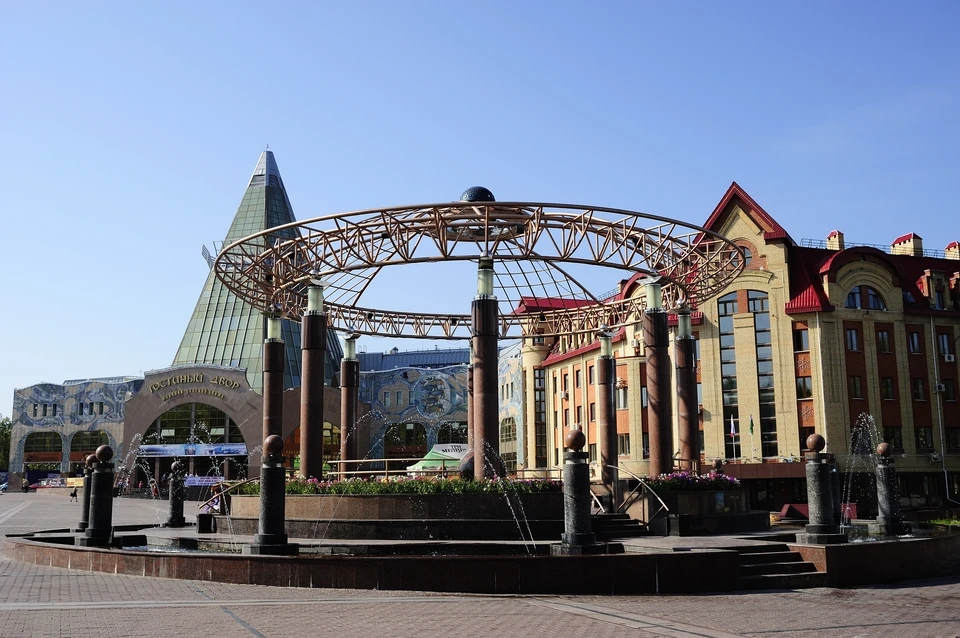
Ханты-Мансийск — столица Югры, город с богатой историей и суровым сибирским характером. В годы Великой Отечественной войны жители города внесли огромный вклад в Победу, работая на рыбокомбинате, леспромхозах и других предприятиях. В 2023 году городу присвоено почётное звание «Город трудовой доблести».
На карте отмечены ключевые места Ханты-Мансийска, связанные с историей города и его вкладом в Великую Победу. Здесь вы найдете памятники, мемориалы и другие достопримечательности, которые рассказывают о героизме и трудовой доблести жителей Ханты-Мансийска.